Overview: My project scene is inspired by the phrase "comparing apples to oranges," so I decided to make a basketball game scene of apples to oranges, with bunny spectators. This is the link to the demo.
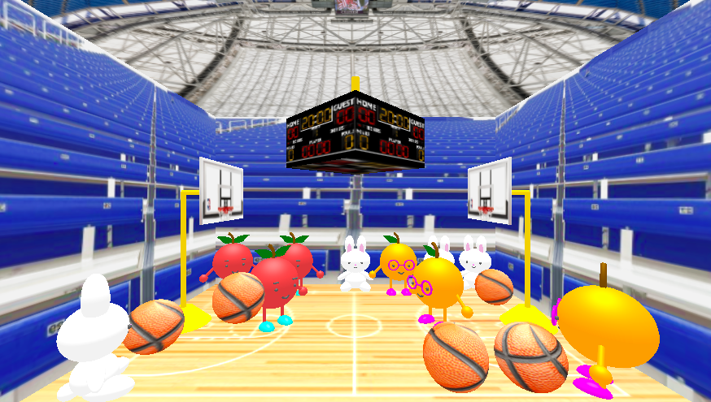I used the following graphics concepts in my project:
The gym floor, bleachers background, and ceiling were produced from texture-mapping.
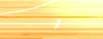 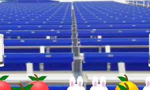 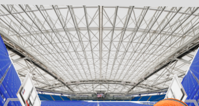The basketball and the hoop/stand used texture-mapping on geometry objects. Phong material was used for these objects to reflect light. The hoop's stand was created from three cylinders, where the base used two different radii.
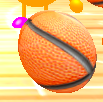 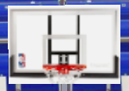 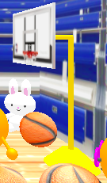The bunny was made with hierarchial modeling using Phong. The geometry objects were mostly spheres that were scaled.
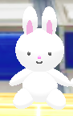The apples and oranges also used hierarchial modeling and Phong material. The brown stem was made from Torus geometry and the green leaf was from a Bezier curve of 16 points. The apple had two bezier leaves and eyebrows, while the orange had one bezier leaf and glasses.
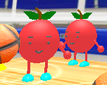 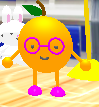Ambient and Directional light were used to light the overall scene.
The animation consists of three moving objects: the scoreboard, the basketball, and orange player near the center. The basketball is dribbled on the floor between the apple and the orange. The orange moves in the z-direction, to bounce the ball back to the apple. While this occurs, the scoreboard is animated by rotating around the y-axis, displaying the score to the audience / players looking from down below.
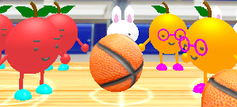 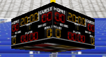